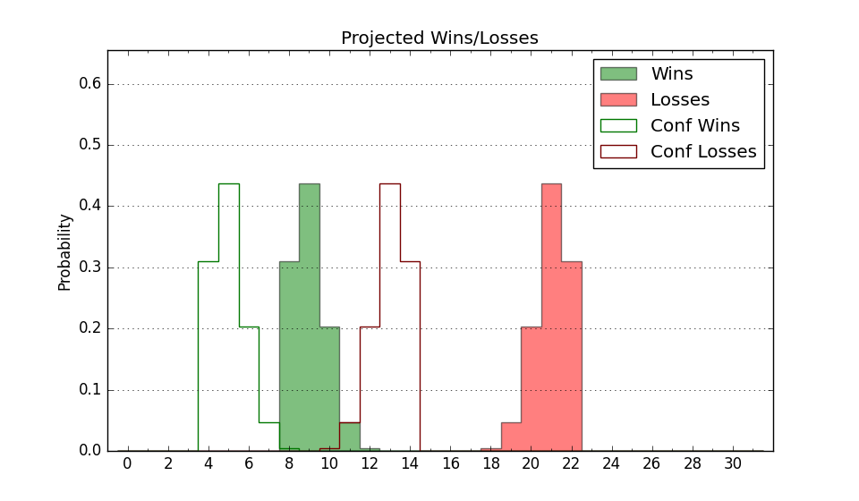

| Home | Game Probabilities | Conferences | Preseason Predictions | Odds Charts | NCAA Tournament |
| City: | Charleston, South Carolina | |
| Conference: | Southern (9th)
| |
| Record: | 4-9 (Conf) 8-17 (Overall) | |
| Ratings: | Comp.: -16.4 (334th) Net: -16.5 (334th) Off: 95.3 (306th) Def: 111.8 (337th) SoR: 0.0 (153rd) |
| Remaining | ||||||
|---|---|---|---|---|---|---|
| Date | Opponent | Win Prob | Pred. | |||
| 2/11 | @ Samford (145) | 8.2% | L 64-81 | |||
| 2/15 | Furman (96) | 14.3% | L 69-82 | |||
| 2/18 | Wofford (250) | 43.4% | L 72-74 | |||
| 2/22 | @ East Tennessee St. (247) | 18.1% | L 64-74 | |||
| 2/25 | @ Mercer (223) | 14.9% | L 62-74 | |||
| Previous | Game Score | |||||
| Date | Opponent | Win Prob | Result | Off | Def | Net |
| 11/7 | @Clemson (74) | 3.4% | L 69-80 | 15.6 | 1.4 | 17.0 |
| 11/10 | Presbyterian (341) | 67.0% | W 70-58 | 3.2 | 9.5 | 12.7 |
| 11/19 | @Butler (101) | 4.9% | L 42-89 | -23.3 | -17.0 | -40.3 |
| 11/23 | @New Orleans (356) | 48.7% | W 72-65 | -11.2 | 22.8 | 11.6 |
| 11/24 | (N) Denver (275) | 32.9% | L 71-74 | 1.3 | 3.3 | 4.6 |
| 11/25 | (N) IUPUI (360) | 73.5% | W 74-53 | 1.0 | 19.0 | 20.0 |
| 11/30 | @Charleston Southern (295) | 24.3% | W 76-73 | 12.0 | 10.8 | 22.7 |
| 12/3 | College of Charleston (77) | 11.0% | L 57-79 | -13.8 | 0.7 | -13.1 |
| 12/13 | @North Carolina (38) | 2.0% | L 67-100 | 1.0 | -5.7 | -4.8 |
| 12/17 | Longwood (144) | 23.3% | L 70-75 | 12.6 | -8.8 | 3.8 |
| 12/20 | @North Carolina Central (221) | 14.5% | L 74-81 | 3.0 | 2.1 | 5.0 |
| 12/29 | Chattanooga (185) | 28.6% | W 76-68 | 10.0 | 9.2 | 19.2 |
| 12/31 | Samford (145) | 23.4% | L 63-75 | -7.7 | 0.3 | -7.4 |
| 1/4 | @Furman (96) | 4.7% | L 72-97 | 2.5 | -9.9 | -7.4 |
| 1/7 | @Wofford (250) | 18.4% | L 57-77 | -22.3 | 9.5 | -12.8 |
| 1/11 | East Tennessee St. (247) | 42.9% | L 74-96 | -2.7 | -31.5 | -34.2 |
| 1/14 | Western Carolina (235) | 40.6% | W 65-61 | -3.6 | 14.4 | 10.8 |
| 1/19 | @UNC Greensboro (111) | 5.5% | L 60-70 | 4.5 | 4.9 | 9.4 |
| 1/21 | @VMI (346) | 40.6% | W 60-52 | -10.1 | 21.6 | 11.5 |
| 1/25 | @Western Carolina (235) | 16.7% | W 81-70 | 27.2 | 11.6 | 38.8 |
| 1/28 | Mercer (223) | 37.3% | L 65-74 | 0.0 | -14.6 | -14.6 |
| 1/30 | Chicago St. (273) | 47.4% | L 75-76 | 8.4 | -12.1 | -3.7 |
| 2/2 | VMI (346) | 70.0% | L 69-75 | -1.0 | -23.1 | -24.1 |
| 2/4 | UNC Greensboro (111) | 16.5% | L 59-79 | 5.3 | -19.3 | -14.0 |
| 2/8 | @Chattanooga (185) | 10.5% | L 63-82 | -8.0 | 4.0 | -3.9 |
| Stats & Trends | |||||
|---|---|---|---|---|---|
| Current | Day | Week | Month | Season | |
| Composite | -16.4 | -0.3 | -2.0 | -4.1 | -9.5 |
| Comp Rank | 334 | -- | -9 | -29 | -85 |
| Net Efficiency | -16.5 | -0.2 | -1.9 | -3.4 | -- |
| Net Rank | 334 | -- | -10 | -24 | -- |
| Off Efficiency | 95.3 | -0.4 | +0.2 | +1.8 | -- |
| Off Rank | 306 | -7 | -2 | +1 | -- |
| Def Efficiency | 111.8 | +0.1 | -2.0 | -5.2 | -- |
| Def Rank | 337 | +2 | -25 | -64 | -- |
| SoS Rank | 272 | +16 | +11 | -85 | -- |
| Exp. Wins | 9.0 | -0.1 | -1.2 | -1.3 | -3.5 |
| Exp. Conf Wins | 5.0 | -0.1 | -1.2 | -0.7 | -1.8 |
| Conf Champ Prob | 0.0 | -- | -- | -- | -1.7 |

| Advanced Stats | ||
|---|---|---|
| Stat | Value | Rank |
| Off Eff FG % | 0.483 | 269 |
| Off Ast Ratio | 0.133 | 249 |
| Off ORB% | 0.183 | 353 |
| Off TO Rate | 0.169 | 267 |
| Off FT Ratio | 0.296 | 242 |
| Def Eff FG % | 0.527 | 266 |
| Def Ast Ratio | 0.157 | 286 |
| Def ORB% | 0.313 | 308 |
| Def TO Rate | 0.134 | 319 |
| Def FT Ratio | 0.325 | 209 |